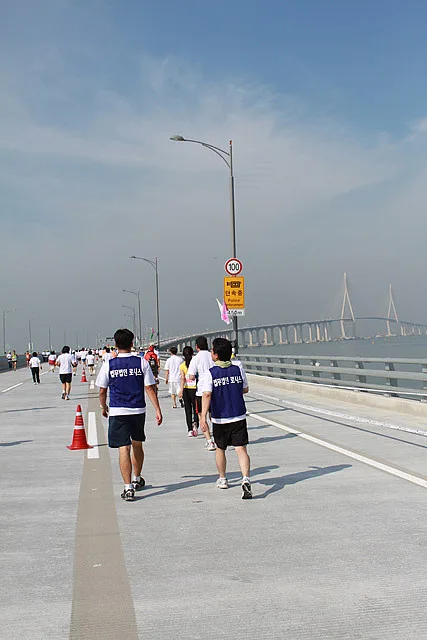
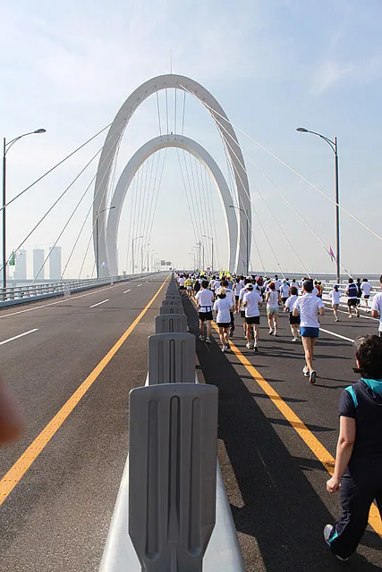
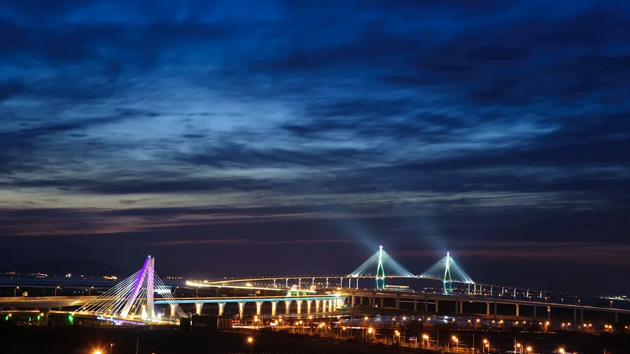

▲ 인천대교는 상판이 해수면에서 약 80m 높이에 있어 바람의 영향을 크게 받는다 ⓒ Wikimedia Commons
1. 바람 때문에 닫히는 도로가 있다
고속도로가 사고나 공사로 막히는 일은 익숙합니다. 그런데 해상 교량은 날씨만으로도 닫힙니다.
그리고 그 기준은 감이 아니라 숫자입니다. 풍속 몇 m/s에서 감속하고, 몇 m/s에서 통제하는지가 미리 정해져 있습니다.
가을과 겨울 서해안·남해안 드라이브를 계획한다면 이 숫자를 알아 두는 편이 낫습니다. 도착해서 진입이 막히면 우회로는 대개 한참 돌아가는 길뿐입니다.

▲ 인천대교 본선의 제한속도 표지. 평상시 기준은 시속 100km지만, 풍속이 올라가면 이 숫자가 절반으로 내려가고 그다음 단계는 통제다 ⓒ Wikimedia Commons
2. 인천대교의 두 단계
| 풍속 | 조치 |
|---|---|
| 초속 21~25m | 시속 50km로 감속 |
| 초속 25m 이상 | 교량 진입 전면 통제 |
초속 21m가 어느 정도인지 감이 오지 않는다면 이렇게 보면 됩니다. 기상청 강풍주의보 기준이 초속 14m입니다. 21m는 그보다 훨씬 강한 바람이고, 25m는 강풍경보 수준을 넘어섭니다.
중요한 것은 감속 폭입니다. 평소 주행 속도에서 시속 50km로 떨어집니다. 절반 이하입니다. 통제까지 가지 않아도 통행 시간이 크게 늘어난다는 뜻입니다.

▲ 행사로 차량이 통제된 인천대교 상판. 평소에는 이 위를 시속 100km로 달린다 ⓒ Wikimedia Commons
3. 안개도 같은 방식으로 관리된다
| 시정거리 | 제한속도 |
|---|---|
| 100~250m 이하 | 시속 80km |
| 100m 이하 | 시속 50km |
서해안고속도로 당진IC~서평택IC 구간의 가변형 속도제한과 기준이 비슷합니다. 그쪽도 가시거리 100m 이내면 법정 제한속도의 50%로 낮춥니다. 서해 일대 도로들이 같은 문제를 공유하고 있다는 뜻입니다. 관련 내용은 서해안고속도로 가변형 속도제한 기사에 정리해 두었습니다.
가을이 특히 문제가 되는 이유가 있습니다. 낮과 밤의 기온 차가 커지면서 해무와 복사안개가 함께 발생하기 좋은 조건이 만들어집니다. 여름보다 가을과 초겨울에 시정 관련 통제가 잦은 이유입니다.
4. 왜 다리 위에서 더 심해지나
인천대교 상판은 해수면에서 약 80m 높이에 있습니다. 아파트 25층 정도입니다.
지상보다 높으면 바람이 강해집니다. 지면 마찰이 없어 풍속이 그대로 유지되고, 주변에 바람을 막아 줄 지형지물도 없습니다. 같은 날 육지에서 초속 15m인 바람이 다리 위에서는 20m를 넘길 수 있습니다.

▲ 바다 위를 가로지르는 구조라 바람을 막아 줄 지형이 없다 ⓒ Wikimedia Commons
측풍은 차종에 따라 다르게 작용합니다. 차체가 높고 측면이 넓은 SUV, 승합차, 화물차, 캠핑 트레일러가 먼저 영향을 받습니다. 같은 바람에서 세단은 버티는데 옆 차선의 화물차는 휘청이는 장면이 여기서 나옵니다.
그리고 갓길 주정차와 촬영은 금지돼 있습니다. 경치가 좋아 차를 세우고 싶어지는 곳이지만, 이 구간에서는 정차 자체가 사고 위험입니다.
5. 애초에 못 들어가는 차
날씨와 무관하게 상시 제한되는 차량 기준도 있습니다.
| 항목 | 기준 |
|---|---|
| 총중량 | 40톤 초과 |
| 축하중 | 10톤 초과 |
| 높이 | 4.2m 초과 |
| 길이 | 16.7m 초과 (굴절·연결차 19.0m) |
| 너비 | 2.5m 초과 |
| 속도 | 정상속도 50km/h 미만 차량 |
마지막 항목이 눈에 띕니다. "정상속도 50km/h 미만"이라는 조건은 느린 차를 아예 들이지 않겠다는 뜻입니다. 고속으로 흐르는 교량에서 저속 차량 한 대가 만드는 위험이 크기 때문입니다.
이상 기후 시 추가 제한도 있습니다. 적설 10cm 이상이거나 영하 20도 이하일 때는 폴카와 트레일러 운행이 제한됩니다. 겨울에 트레일러를 끌고 여행하는 분이라면 확인이 필요한 항목입니다.
6. 해상 교량을 지나는 여행 계획
첫째, 출발 전에 풍속 예보를 보십시오. 강수 확률만 보고 나서면 통제 상황을 놓칩니다. 해상 구간은 육지 예보와 다르므로 해당 지역 해상 예보를 확인하는 편이 정확합니다.
둘째, 우회로의 시간과 요금을 미리 계산해 두십시오. 해상 교량이 막히면 대개 크게 돌아야 합니다. 통행료가 다른 경로로 바뀌면서 예상보다 많이 나올 수 있습니다.

▲ 서해대교 역시 바람과 안개의 영향을 크게 받는 구간이다 ⓒ Wikimedia Commons
셋째, 차종을 감안하십시오. 루프박스를 얹었거나 캠핑 트레일러를 끄는 경우 측풍의 영향이 훨씬 큽니다. 통제 기준에 걸리지 않아도 운전 부담이 다릅니다.
넷째, 다리 위에서는 두 손으로 운전하십시오. 교량 진입 직후와 주탑 사이 구간에서 바람의 세기가 급격히 바뀝니다. 한 손 운전 중에 측풍을 맞으면 차선을 벗어나기 쉽습니다.
정리하면 이렇습니다. 해상 교량은 바람과 시정이라는 두 개의 스위치로 통행 조건을 바꿉니다. 21과 25, 250과 100. 이 네 개의 숫자만 알아 두면 가을 서해안에서 헛걸음할 일이 줄어듭니다.